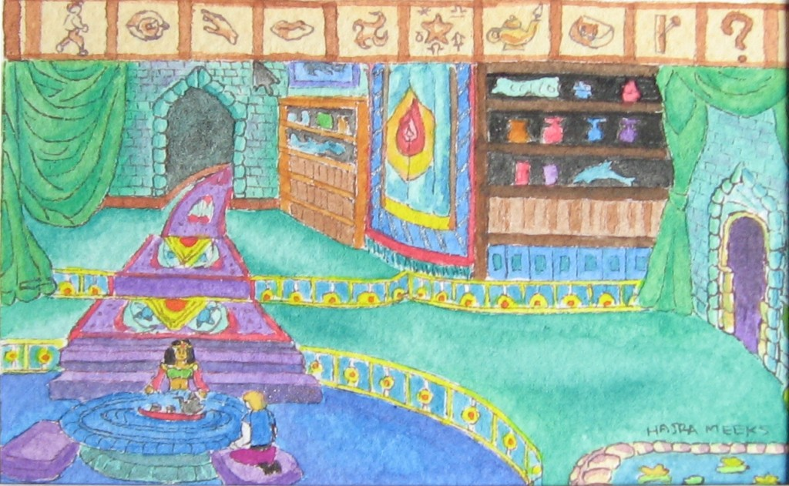
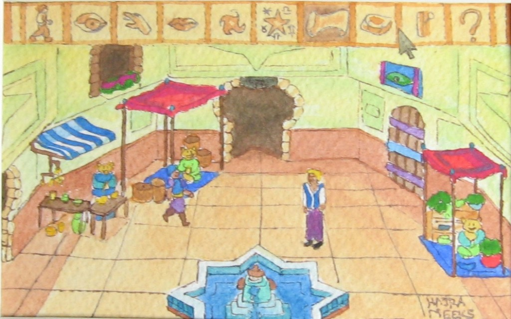

Not the kind you’re expecting, but rather watercolor interpretations of AGDI’s remake of the classic Sierra On-Line 16-color sequel to the only briefly named Hero’s Quest: So You Want to Be a Hero. Now, before you scoff, I know the artist and she’s eminently capable of producing more detailed work, but the goal here was to recreate the sense of 320×200 resolution with limited colors in the style of Persian miniatures.

Having Tea with the Enchantress Aziza
The ending scene with the sultan
View figure at its original source ↗
The ending scene with the sultan

The marketplace around the fountain in Shapeir
This entry was posted on Monday, January 11th, 2010 at 5:49 PM and is filed under Art, Games. You can follow any responses to this entry through the RSS 2.0 feed. Both comments and pings are currently closed.